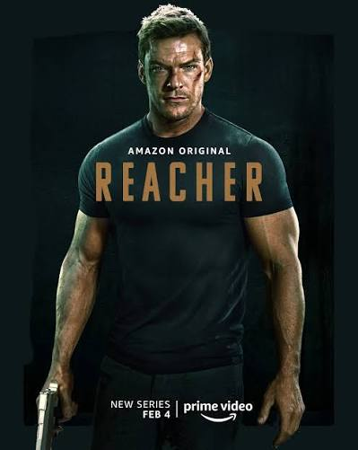
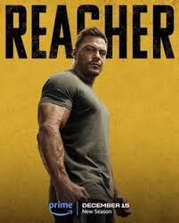
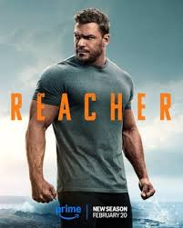
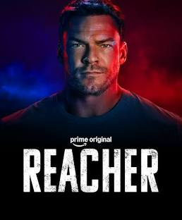

-
Reacher season 1

Reacher investigates, alongside police officers Oscar Finlay and Roscoe Conklin, a local conspiracy while also trying to uncover his brother's murderer.
-
Reacher season 2

The season, based on Bad Luck and Trouble (2007), stars Alan Ritchson, Maria Sten, Serinda Swan, Shaun Sipos, Ferdinand Kingsley, and Robert Patrick. In the season, Reacher reunites with his former unit to discover who is killing their members and stop an illegal arms trafficking operation between an aeronautical company and a terrorist arms broker.
-
Reacher season 3

The story follows Reacher, a former major in the United States Army Military Police Corps, who has agreed to work with the US Drug Enforcement Administration (DEA) to bring down suspected drug smuggler Zachary Beck by going undercover as the bodyguard of Beck's son, Richard. During the investigation, Reacher encounters a ruthless adversary from his military past, and must balance his desire for revenge against his need to finish his mission.
-
Reacher season 4

Based on the 13th book in Lee Child's global best-selling series, Gone Tomorrow, when a chance encounter with a distraught stranger on a subway goes horribly wrong, Reacher is drawn into a complex and deadly game that pits him against ruthless foes from the highest echelons of power